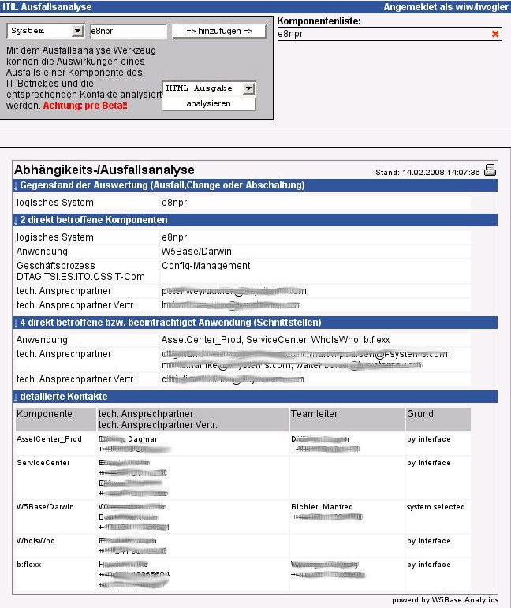

W5Base
ITIL
Ausfalls-/
Auswirkungsanalyse
|
Stand: |
In einem IT Unternehmen ist es notwendig, beim Ausfall oder der Planung einer Wartung eines Systems die genauen Auswirkungen des Wegfalles dieser Komponente ermitteln zu können.
Gerade beim Einsatz von extrem gesharten
Kompontenten (NAS-Server, Backupserver ..) ist dies notwendig. In
diesem Fall ist es auch sehr hilfreich, wenn man die notwendigen
technischen Ansprechpartner sehr schnell ermitteln kann.
W5Base
ITIL-FaultAnalytics kann dies in einem ersten Schritt für
das Wegfallen von NAS-Filern oder Server-Systemen analysieren.
NAS Server zeichnen sich dadurch aus, dass Resourcen (NAS-Freigaben) anderen Systemen zur Verfügung gestellt werden. Die Dokumentation dieser Freigaben ist somit zwingend. Die Freigabe von Resourcen erfolgt entweder an Systeme, IP-Adressen oder IP-Netze.
W5Base ITIL-FaultAnalytics geht nun davon aus, dass die IP-Adressen aller Systeme in der W5Base dokumentiert sind. Wenn nun die Freigaben der NAS Filer ebenfalls dokumentiert sind, so können mit entsprechenden analyse Programmen die geforderten Informationen sehr rasch ermittelt werden.
Als Eingabe können ein oder mehrere Systeme
ausgewählt werden. Das Analyse Programm geht dann in folgenden
Schritten vor:
Es werden alle Systeme ermittelt, die
NFS/NAS Exports eines der angegebenen Systeme nutzen. Diese Systeme
werden in die Liste der direkt betroffenen Systeme aufgenommen.
Bei
der Ermittlung der NAS/NFS Clients sind IP Netz-Freigaben möglich.
Diese werden entsprechend der TCP/IP Regeln mit den verfügbaren
IP-Adressen abgeglichen, die bei Systemen in der W5Base zugeordnet
wurden.
Aus der Liste der direkt betroffenen Systeme
wird dann die Liste der direkt betroffenen Anwendungen ermittelt.
Aus den Direkt betroffenen Anwendungen wird
die Liste der Schnittstellen-Anwendungen und Kundenprozesse
ermittelt.
Zu den Listen „direkt betroffene Systeme“, „direkt betroffene Anwendungen“ und „betroffene Schnittstellen Anwendungen“ werden die technischen Kontakte und die Teamleiter der Teams ermittelt, die für die jeweiligen Komponenten zuständig sind.

Im „T-Systems AssetCenter“ wäre eine vergleichbare Analyse nur möglich, wenn die IP-Zuordnung und die Definition von Freigaben und Mountpoints grundlegend überarbeitet werden würde.
Bei IP-Adressen fehlt z.B. der Netzbereich und bei Mountpoints besteht nur die Möglichkeit, diese für Systeme freizugeben, und nicht für IP-Netze.
Inhaltsverzeichnis
1 Zielsetzung 2
2 Vorbedingungen 2
3 Arbeitsweise der Analyse 2
4 Beispiel Ausgabe des Analyse Tools 3
5 Vergleich mit anderen Tools 3
6 Inhaltsverzeichnis 4